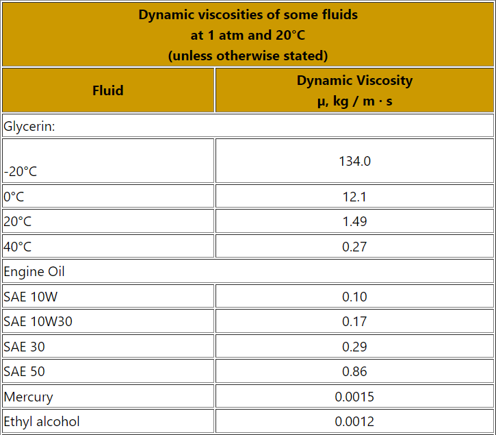
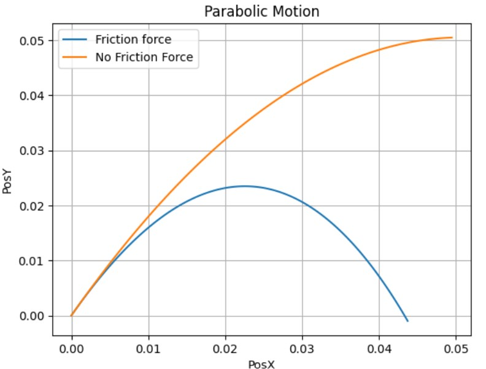
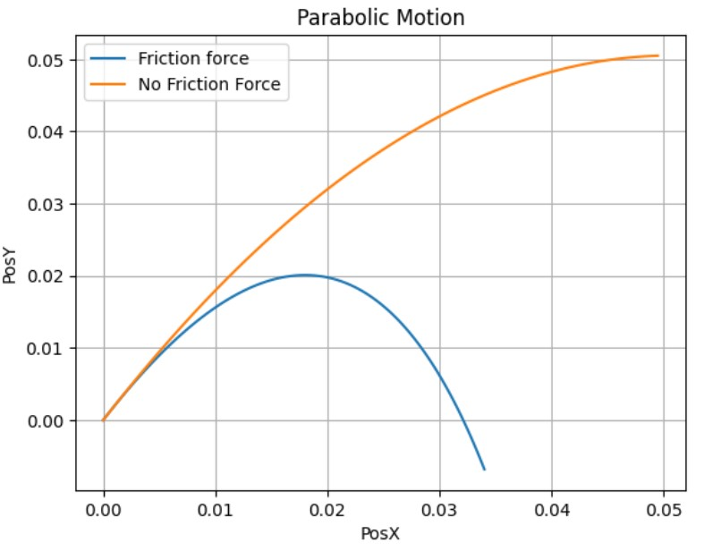
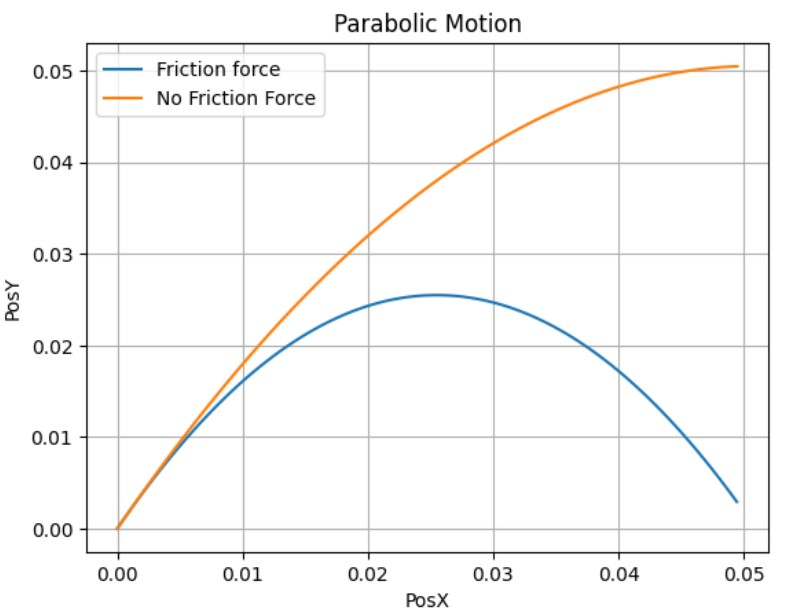

Parabolic Motion with Drag
In this section, we will revisit the equations we developed in free fall motion. However, to describe this motion, we will slightly change the variable definitions. That is, we will express velocity in terms of the derivative of position, and we will do the same for acceleration (the second derivative of position). This is done in order to utilize a numerical method to approximate both results.
From the free fall motion, we knew that:
For \(x\):
For \(y\):
From the above equations, we can deduce velocities as:
For \(x\):
For \(y\):
The numerical method we will use is Euler-Cromer, also known as the semi-implicit Euler method. This method generates a discrete approximation as it follows:
The difference with the normal Euler method is that for the equation of \(x_{n+1}\) it uses the velocity in time \(v_{n+1}\) instead of using the velocity in the time \(v_{n}\).
Having this, we can bring these equations to our model, which would leave us:
For \(x\): The equations \((1)\) and \((3)\), which describe the derivative of velocity, that is, acceleration, and position at the \(x\) axis respectively, would then be given by:
For \(y\): The equations \((2)\) and \((4)\) that describe the derivative of the velocity, that is, the acceleration, and the position on the axis \(y\) respectively, would then be given by:
These are then the equations that we will program to observe the parabolic motion with drag. To compare this phenomenon with the ideal parabolic motion, we will plot the latter on the same graph as well. In this motion we would not have our drag given by \(\gamma\) wich is then:
For \(x\):
For \(y\):
Now, in the equations we see a constant \(\gamma\) appearing all the time. This Gamma is the drag of the movement. It is given by the coefficient of drag from Stokes’ law:
Where \(b\) is a drag constant that depends on the fluid. This is known as the dynamic viscosity and is given by:
Where \(\mu\) depends on the fluid. In this case we will use oil and glycerin as fluids in order to have a not so low coefficient of drag so that movements can be well differentiated.
AS A RECOMMENDATION! Do not use a coefficient \(>1\) since the space of time in which it is being graphed is not very large, so the behavior could not be observed well. If you set a very high number, you can easily modify the maximum parameter of np.linspace(start, maximum, steps) so that it plots over a larger range.
Let’s look at some viscosity constants that can be used:

Now that we have our constnats, we can start programming!:
# Euler-Cromer
# Import libraries
import numpy as np
import matplotlib.pyplot as plt
# Declare initial values Motion with Drag
pos_x = 0
pos_y = 0
vel_x = 0.5
vel_y = 1
# Declare initial values Motion with No Drag
pos_x2 = 0
pos_y2 = 0
vel_x2 = 0.5
vel_y2 = 1
Now, as we had been solving the codes, let´s make a function that do the Euler-Cromer method:
def EulerCromer():
viscosidad_dinamica = float(input("Enter dynamic viscosity of the fluid\n As a recomendation, make it <1: "))
time =np.arange(0, 0.1, 0.001)
posx = [pos_x]; posy = [pos_y]
velx = [vel_x]; vely = [vel_y]
posx2 = [pos_x2]; posy2 = [pos_y2]
velx2 = [vel_x2]; vely2 = [vel_y2]
miu = viscosidad_dinamica; m = 20; g = 9.8; R=5;
b = 6*np.pi*R*miu
gamma = b/m
for i in range(len(time)-1):
velx.append(velx[i]- gamma * velx[i]*time[1])
vely.append(vely[i] - time[1] * (g+gamma*vely[i]))
velx2.append(velx2[i])
vely2.append(vely2[i] - time[1]*g)
posx.append(posx[i] +time[1] * velx[i+1] * np.exp(-gamma*time[i]) )
posy.append(posy[i] +time[1] * ((-g/gamma)*( 1-np.exp(-gamma*time[i]) ) + vely[i+1] * np.exp(-gamma*time[i]) ))
posx2.append(posx2[i] + time[1]*velx2[i+1])
posy2.append(posy2[i] + time[1]*vely2[i+1])
plt.plot(posx, posy)
plt.plot(posx2, posy2)
plt.title("Parabolic Motion")
plt.grid("--")
plt.xlabel("PosX")
plt.ylabel("PosY")
plt.legend(["Drag", "No Drag"], loc="best")
Let´s try the code with different \(\mu\) values!
#Glycerin viscosity = 0.27
EulerCromer()

#Engine Oil viscosity = 0.86
EulerCromer()

#Mercury viscosity = 0.0015
EulerCromer()
